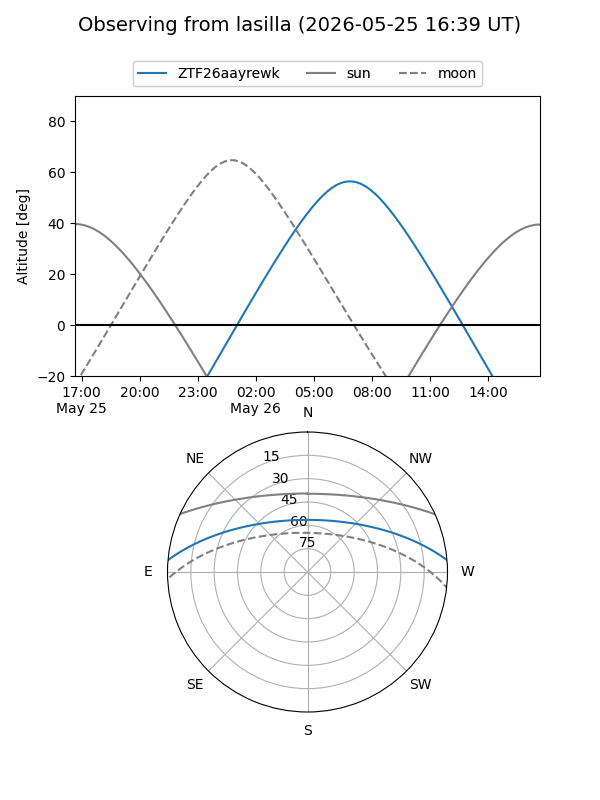
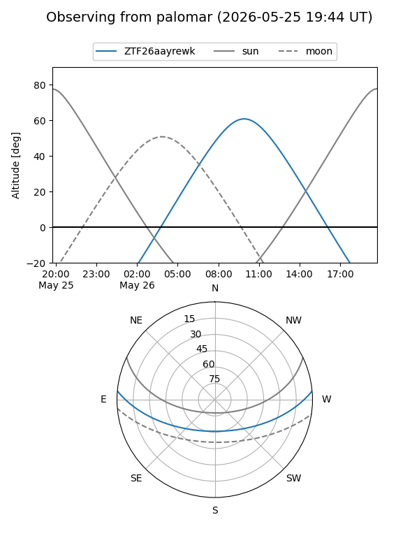

ZTF26aayrewk
Target ZTF26aayrewk at 2026-05-25 11:22
Aliases and brokers:
lsst-FINK: link
lsst-Lasair: link
lsst-ALeRCE: link
ztf-FINK: link
ztf-Lasair: link
ztf-ALeRCE: link
alt names
ZTF26aayrewk (ztf,fink_ztf)
Coordinates:
equatorial (ra, dec) = 275.5587,+4.24381
equatorial (HMS+DMS) = 18:22:14.09,+04:14:37.71
galactic (l, b) = (33.3995,+8.42595)
Flags:
Photometry:
last ztfg=19.93
1 ztfg detections
Lightcurve
Visibility


Additional plots